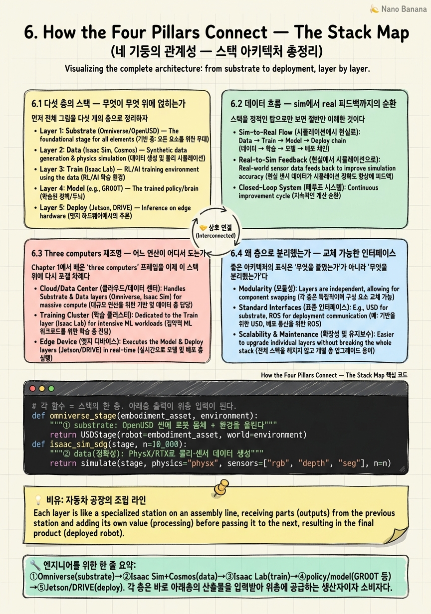
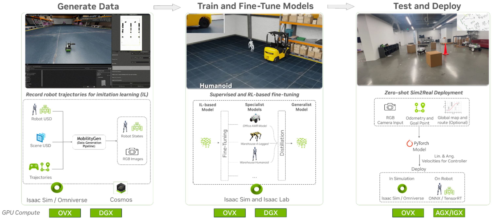

How the Four Pillars Connect — The Stack Map

🎯 학습 목표
- 네 기둥(Omniverse·Isaac Sim·Isaac Lab·Cosmos)의 의존 관계를 그릴 수 있다
- 학습 데이터가 sim→policy로 흐르는 전체 경로를 설명한다
- three computers(DGX·Omniverse·Jetson)와 소프트웨어 스택을 매핑한다
- 각 층이 교체 가능한 인터페이스로 분리된 이유를 이해한다
- 새 로봇/도메인이 이 스택에 어떻게 얹히는지 예측한다
지난 다섯 챕터에서 우리는 NVIDIA Physical AI의 개별 부품을 하나씩 뜯어봤다. Chapter 1의 'three computers' 사고틀, Chapter 2의 Omniverse와 OpenUSD, Chapter 3의 Isaac Sim, Chapter 4의 Isaac Lab·Newton, Chapter 5의 Cosmos WFM. 각각은 강력하지만, 초심자가 가장 자주 길을 잃는 지점은 '그래서 이것들이 서로 어떻게 맞물리는가'이다. 이 챕터는 부품 설명을 멈추고, 지금까지의 조각을 하나의 지도(map)로 접합한다.
핵심 주장은 단순하다 — NVIDIA의 Physical AI 스택은 계층(layer)의 수직 스택이며, 각 층은 아래층 위에 얹히고 위층에 서비스를 제공한다. 맨 아래 Omniverse(OpenUSD 기반 substrate)가 3D 월드를 표현하는 공통 바닥을 깔고, 그 위에서 Isaac Sim과 Cosmos가 데이터를 만들며, 그 데이터로 Isaac Lab이 정책을 학습시키고, 학습된 정책/모델이 마지막으로 Jetson·DRIVE 같은 edge로 배치된다. 이 층들은 느슨하게(교체 가능한 인터페이스로) 결합되어 있어, 한 층을 바꿔도 나머지가 무너지지 않는다.
이 지도가 손에 들어오면 세 가지가 명료해진다. 첫째, 데이터가 어디서 생겨 어디로 흐르는가(sim→policy→real→feedback). 둘째, 각 연산이 어느 컴퓨터에서 도는가(three computers 재매핑). 셋째, 새로운 로봇이나 도메인을 추가할 때 무엇을 어디에 얹어야 하는가. 마지막으로 우리는 이 수직 통합이 NVIDIA에게 왜 강점이자 동시에 lock-in 리스크인지까지 짚는다.
핵심 내용
6.1 다섯 층의 스택 — 무엇이 무엇 위에 얹히는가
먼저 전체 그림을 다섯 개의 층으로 정리하자. 아래에서 위로 읽으면 '기반 → 데이터 → 학습 → 정책 → 배치'의 순서다.
-
① Omniverse (substrate): OpenUSD 기반의 3D 월드 표현·상호운용 계층. 모든 것이 딛고 서는 공통 바닥이다.
-
② Isaac Sim + Cosmos (data): Isaac Sim은 RTX·PhysX 기반 로봇 시뮬레이터로 정밀한 물리·센서 데이터(SDG)를 만들고, Cosmos는 WFM으로 그 데이터를 생성·증강한다.
-
③ Isaac Lab (train): Isaac Sim 위에서 도는 로봇 학습 프레임워크. RL(강화학습)·IL(모방학습)로 정책을 훈련한다.
-
④ Policy / Model: 학습의 산출물. GR00T(humanoid foundation model), COMPASS 같은 정책·모델이 여기 놓인다.
-
⑤ Jetson / DRIVE (deploy): 학습된 정책을 실제 로봇·차량의 edge에서 실행하는 배치 계층.
중요한 것은 이 화살표의 방향성이다. ②는 ①의 OpenUSD 씬 위에서만 의미가 있고, ③은 ②가 만든 데이터 없이는 학습할 것이 없으며, ⑤는 ③④가 뽑아낸 정책이 없으면 실행할 것이 없다. 즉 각 층은 바로 아래층의 산출물을 입력으로 삼는 소비자이자, 바로 위층에 산출물을 공급하는 생산자다.
한 가지 흔한 오해를 정리하자 — Cosmos를 Isaac Sim의 '대체재'로 보는 시각이다. 둘은 경쟁이 아니라 같은 데이터 층(②)의 상보적 파트너다. Isaac Sim은 손으로 정교하게 만든 물리 엔진 기반의 '정확한' 시뮬레이션을 제공하고, Cosmos는 생성형 WFM으로 손으로 못 만드는 '다양성'(조명·날씨·재질·돌발 상황)을 상상으로 채운다. 정확성(Sim)과 다양성(Cosmos)이 만나 sim-to-real gap을 양방향에서 좁힌다. 이 층 구조를 머릿속에 넣으면, 이후 챕터의 모든 도구(GR00T, MobilityGen, R²D²)가 '스택의 어느 칸에 꽂히는 부품인가'로 자연스럽게 정리된다.
6.2 데이터 흐름 — sim에서 real 피드백까지의 순환
스택을 정적인 탑으로만 보면 절반만 이해한 것이다. 진짜 통찰은 이 스택을 관통해 데이터가 순환한다는 데 있다. 흐름은 하나의 루프를 그린다.
-
생성(②): Isaac Sim이 물리 정확한 synthetic data(RGB/depth/segmentation, pose, action)를 만들고, Cosmos가 이를 미래 rollout·도메인 변주로 증강한다.
-
학습(③④): 그 데이터가 Isaac Lab으로 흘러들어가 RL/IL로 policy(GR00T 등)를 학습시킨다.
-
배치(⑤): 학습된 정책이 Jetson·DRIVE로 내려가 실제 로봇·차량에서 실행된다.
-
피드백: 실세계에서 수집된 관찰·실패 사례가 다시 ②로 올라와, 부족한 시나리오를 시뮬로 재현·증강하는 다음 라운드의 입력이 된다.
이 순환이 중요한 이유는 Physical AI의 근본 병목이 '데이터'이기 때문이다(다음 Chapter 7의 주제). 실제 로봇으로 세상의 모든 상황을 겪게 하는 것은 비용·시간·안전 면에서 불가능하다. 그래서 스택은 '실세계에서 값비싸게 조금 수집 → 시뮬·WFM으로 값싸게 대량 증폭 → 학습 → 배치 → 다시 수집'이라는 데이터 증폭 엔진으로 설계됐다.
방향을 가리키는 두 용어를 구분하자.
Sim-to-real(심투리얼) = 시뮬레이션에서 학습한 정책을 실세계로 옮기는 방향. 스택의 아래→위(②→⑤)로 내려가는 주 흐름이다.
Real-to-sim(리얼투심) = 실세계에서 관찰한 것을 시뮬로 되가져와 재현·증강하는 방향. 피드백 루프의 위→아래 흐름이다.
두 방향이 함께 돌 때 비로소 domain gap이 닫힌다. Chapter 5에서 본 Cosmos의 세 축(Predict·Transfer·Reason)은 바로 이 루프의 ② 단계에서 '상상으로 데이터를 불리고 물리 타당성으로 거르는' 심장으로 작동한다. 스택은 탑이 아니라 돌아가는 바퀴다.
6.3 Three computers 재조명 — 어느 연산이 어디서 도는가
Chapter 1에서 배운 'three computers' 프레임을 이제 이 스택 위에 다시 포갤 차례다. NVIDIA는 Physical AI를 세 종류의 컴퓨터가 협업하는 것으로 본다 — 학습하는 컴퓨터, 시뮬레이션하는 컴퓨터, 배치되는 컴퓨터. 각각을 소프트웨어 층과 맞춰보면 스택 지도가 완성된다.
| Computer | 하드웨어 | 맡는 층 | 하는 일 |
|---|---|---|---|
| 학습 컴퓨터 | DGX | ②③ 학습 연산 | policy·model 훈련(RL/IL), WFM 학습 |
| 시뮬 컴퓨터 | Omniverse + OVX | ①② 시뮬/데이터 | 3D 월드 구동, synthetic data 생성 |
| 배치 컴퓨터 | Jetson AGX Thor / DRIVE | ⑤ 배치 | 로봇·차량 위 실시간 추론 |
이 매핑이 드러내는 핵심은 연산의 지리적 분리다. 무겁고 병렬적인 학습·시뮬은 데이터센터(DGX·OVX)에서 돌고, 가볍고 지연에 민감한 추론만 edge(Jetson)로 내려간다. 왜 이렇게 나누는가? 로봇 정책을 학습시키는 데는 수천 GPU-시간이 들지만, 로봇이 현장에서 그 정책을 '실행'하는 데는 밀리초 단위 추론만 필요하기 때문이다. 학습의 무게를 클라우드에 두고 배치의 가벼움을 로봇에 두는 것이 합리적이다.
Jetson AGX Thor(젯슨 토르) = NVIDIA의 최신 세대 robotics edge 컴퓨터. Blackwell 아키텍처 기반으로 humanoid 같은 고연산 로봇의 온보드 추론을 겨냥한다(자세한 스펙은 Chapter 12).
주의할 점 하나 — 세 컴퓨터는 물리적으로 떨어져 있지만 같은 OpenUSD·같은 정책 포맷을 공유하기에 하나의 파이프라인으로 이어진다. DGX에서 학습된 정책이 Jetson에서 그대로 돌 수 있는 이유는, 스택 전체가 CUDA라는 공통 연산 기반과 OpenUSD라는 공통 데이터 기반 위에 서 있기 때문이다. 이 공통 기반이 없으면 세 컴퓨터는 세 개의 섬으로 흩어진다. three computers는 하드웨어 3종이 아니라, 하나의 스택이 세 장소에서 각자의 역할을 맡는 '분업 구조'로 이해해야 한다.

6.4 왜 층으로 분리했는가 — 교체 가능한 인터페이스
좋은 아키텍처의 표식은 '무엇을 붙였는가'가 아니라 '무엇을 분리했는가'다. NVIDIA 스택이 다섯 층으로 나뉜 이유는 단순한 정리 정돈이 아니라, 각 층을 교체 가능한 인터페이스 뒤에 숨겨 독립적으로 진화·대체할 수 있게 하기 위함이다.
가장 명확한 사례가 Chapter 4에서 본 Isaac Lab의 물리 backend 분리다. Isaac Lab은 physics engine을 하드코딩하지 않고, factory pattern(팩토리 패턴)으로 런타임에 어떤 엔진을 쓸지 디스패치한다.
Factory pattern(팩토리 패턴) = 구체적인 구현 객체를 직접 생성하지 않고, 공통 인터페이스를 통해 '어떤 구현을 만들지'를 런타임에 결정·주입하는 설계 패턴.
덕분에 같은 학습 코드가 기본 엔진인 PhysX로도, Warp 네이티브의 미분가능(differentiable) 엔진인 Newton으로도 돌 수 있다. 학습 로직(③)은 물리 구현(②의 세부)이 무엇인지 몰라도 된다 — 인터페이스만 지키면 backend는 갈아끼울 수 있다.
이 원리는 스택 전체에 반복된다.
-
OpenUSD 인터페이스(①): 어떤 시뮬레이터·렌더러든 같은 씬을 읽고 쓸 수 있어, 도구를 갈아끼워도 월드는 유지된다.
-
데이터 포맷(②→③): SDG 산출물이 표준 포맷이라, Isaac Sim이든 Cosmos든 생성원이 바뀌어도 학습 파이프라인은 그대로다.
-
정책 포맷(④→⑤): 학습된 정책이 표준 표현이라, 어느 edge(Jetson·DRIVE)로도 배치 가능하다.
분리가 주는 실질적 이득은 세 가지다. 첫째, 독립 진화 — Newton이 PhysX를 밀어내도 학습 코드는 안 바뀐다. 둘째, 부분 교체 — 특정 층만 자사 도구로 바꿔도 나머지와 물린다. 셋째, 병렬 개발 — 팀들이 각 층을 따로 개발할 수 있다. 반대로 층 경계가 무너지면(예: 학습 코드가 특정 물리 엔진의 내부를 직접 호출하면) 이 모든 이득이 사라진다. 그래서 '교체 가능한 인터페이스로의 분리'는 이 스택을 이해하는 가장 깊은 설계 원리다.
6.5 새 로봇·새 도메인을 얹기 — 그리고 수직통합의 양면
이 스택 지도의 실용적 가치를 시험하는 질문은 이것이다 — '완전히 새로운 로봇(예: 4족 보행 로봇)이나 새 도메인(예: 물류 창고)을 추가하려면 무엇을 해야 하는가?' 스택이 잘 설계됐다면, 답은 '전체를 다시 만들 필요 없이, 정해진 자리에 몇 개의 자산만 얹으면 된다'여야 한다.
실제로 그렇다. 새 로봇/도메인은 대개 두 가지 형태로 스택에 얹힌다.
-
Embodiment asset(임바디먼트 자산): 로봇의 몸체를 기술한 자산 — URDF/OpenUSD로 표현된 링크·조인트·센서·질량 등. ①②층에 등록되면 시뮬·데이터 생성이 그 몸을 인식한다.
-
Task 정의: 그 로봇이 무엇을 해야 하는가 — 보상 함수(RL), 시연 데이터(IL), 성공 조건. ③층에 등록되면 학습이 시작된다.
즉 substrate(①), 데이터 엔진(②), 학습 프레임워크(③)는 재사용하고, 바뀌는 것은 '몸(embodiment)'과 '할 일(task)'뿐이다. 스택의 나머지는 그대로 돌아간다. 이것이 층 분리의 배당금이다 — 새 로봇마다 시뮬레이터를 새로 짜지 않아도 된다. 이 원리는 Chapter 8의 GR00T(하나의 foundation model이 여러 humanoid에 얹힘)와 Chapter 9의 R²D² 워크플로우에서 구체화된다.
마지막으로 이 챕터를 관통하는 전략적 통찰을 짚자. NVIDIA의 이 스택은 수직 통합(vertical integration) OS다 — CUDA(연산) ~ Omniverse(월드) ~ Isaac(로봇) ~ Cosmos(데이터) ~ Jetson(배치)까지 한 회사가 전 계층을 소유한다. 이는 명백한 강점이다. 층 사이의 인터페이스가 한 회사 손에서 최적화되니 마찰이 적고, 성능·통합도가 높으며, '세 컴퓨터'가 매끄럽게 이어진다.
그러나 같은 동전의 뒷면은 lock-in이다. 스택 깊숙이 들어갈수록 CUDA·OpenUSD·Isaac에 종속되고, 특정 층만 경쟁사 도구로 바꾸기가 점점 어려워진다. 앞서 본 '교체 가능한 인터페이스'와 OpenUSD·Newton의 오픈소스화(Linux Foundation)는 이 lock-in 우려를 누그러뜨리려는 전략적 완충이기도 하다. 냉정한 엔지니어라면 이 스택을 '강력하지만 종속적'이라는 양면으로 읽어야 한다 — 통합의 편익과 이식성의 대가를 저울질하는 것이 실무 판단의 핵심이다.
💡 비유로 이해하기
네 기둥의 스택을 자동차 공장으로 그려보자. 맨 아래 Omniverse는 공장 건물과 표준 규격(도량형) 그 자체다. 모든 기계와 부품이 같은 단위(OpenUSD)로 치수를 재기에, 서로 맞물릴 수 있다. 건물과 규격이 없으면 어떤 라인도 설 수 없다.
그 위에서 Isaac Sim과 Cosmos는 부품 공급소(데이터 층)다. Isaac Sim은 도면대로 정밀하게 부품을 깎는 정밀 가공기이고(물리 정확), Cosmos는 '이 부품을 다양한 색·재질·조건으로도 만들어봐'라며 변형을 대량으로 찍어내는 생성 기계(다양성)다. 둘이 합쳐 라인에 흘려보낼 재료를 만든다.
Isaac Lab은 조립 라인(학습)이다. 공급된 부품(데이터)을 받아 실제 제품(policy)으로 조립한다. 라인의 좋은 점은 '어떤 가공기(PhysX냐 Newton이냐)가 부품을 만들었든 상관없이' 같은 규격이면 조립할 수 있다는 것 — 이것이 교체 가능한 인터페이스다.
완성된 제품, 즉 정책(GR00T 등)이 컨베이어를 타고 나와 Jetson이라는 출고 트럭에 실려 현장(로봇)으로 배송(배치)된다. 그리고 현장에서 돌아온 고장 리포트(real 피드백)가 다시 부품 공급소로 올라가 다음 생산의 개선 입력이 된다.
three computers는 이 공장의 '세 부서'다. 설계·조립을 담당하는 본사 데이터센터(DGX=학습), 시뮬레이션 라인을 돌리는 공정실(Omniverse+OVX=시뮬), 그리고 완제품이 실제로 일하는 현장(Jetson=배치). 세 부서가 같은 규격(OpenUSD)과 같은 언어(CUDA)를 쓰기에 하나의 회사처럼 매끄럽게 돌아간다 — 다만 그 편리함의 대가로, 이 공장 밖의 표준으로 갈아타기가 어려워진다는 것이 수직통합의 그림자다.
💻 코드 예시
네 기둥이 하나의 파이프라인으로 이어지는 흐름을 함수 합성으로 표현한 개념 코드다. 실제 API가 아니라, '각 층이 아래층의 산출물을 입력받아 위층에 넘긴다'는 스택의 데이터 흐름과 교체 가능한 인터페이스를 보여주는 것이 목적이다.
# 각 함수 = 스택의 한 층. 아래층 출력이 위층 입력이 된다.
def omniverse_stage(embodiment_asset, environment):
"""① substrate: OpenUSD 씬에 로봇 몸체 + 환경을 올린다"""
return USDStage(robot=embodiment_asset, world=environment)
def isaac_sim_sdg(stage, n=10_000):
"""② data(정확성): PhysX/RTX로 물리·센서 데이터 생성"""
return simulate(stage, physics="physx", sensors=["rgb", "depth", "seg"], n=n)
def cosmos_generate(stage, base_data):
"""② data(다양성): WFM으로 미래 rollout + 도메인 변주 증강"""
future = cosmos.predict(stage) # 미래 상태 상상
varied = cosmos.transfer(future, randomize=["light", "weather"])
return cosmos.reason.filter(base_data + varied) # 물리 타당성만 통과
def isaac_lab_train(dataset, task, backend="newton"):
"""③ train: factory pattern으로 물리 backend 런타임 선택"""
engine = PhysicsBackend.create(backend) # physx <-> newton 교체 가능
return train_policy(dataset, task, engine, algo="rl+il") # -> ④ policy
def jetson_deploy(policy, device="agx_thor"):
"""⑤ deploy: 학습된 정책을 edge에서 실시간 추론"""
return Runtime(device).load(policy) # 실세계 피드백 -> 다시 ②
# ── 스택을 관통하는 하나의 파이프라인 ──
stage = omniverse_stage(new_robot_urdf, warehouse_scene)
data = cosmos_generate(stage, isaac_sim_sdg(stage))
policy = isaac_lab_train(data, task=pick_and_place, backend="newton")
robot = jetson_deploy(policy) # DGX/OVX에서 학습 -> Jetson에서 배치다섯 함수가 곧 다섯 층이다. omniverse_stage(①)는 새 로봇의 embodiment asset과 환경을 OpenUSD 씬으로 조립한다 — 새 로봇을 얹는 지점이 바로 여기다. isaac_sim_sdg(②·정확성)와 cosmos_generate(②·다양성)가 데이터 층을 이룬다. Sim이 물리 정확한 base data를 만들고, Cosmos가 predict→transfer→reason으로 그것을 증강·필터링해 domain gap을 줄인 데이터셋을 만든다 — Chapter 5의 세 축이 여기 그대로 들어온다. isaac_lab_train(③)은 factory pattern(PhysicsBackend.create)으로 backend를 런타임에 고른다 — 같은 학습 코드가 physx든 newton이든 돌게 하는 교체 가능한 인터페이스의 핵심이다. 산출물 policy가 ④다. jetson_deploy(⑤)가 그 정책을 edge에서 실행한다. 맨 아래 호출 순서를 보면 데이터가 stage→data→policy→robot으로 한 방향으로 흐르고, 학습(DGX/OVX)과 배치(Jetson)가 세 컴퓨터로 분리돼 있음이 드러난다. 각 층이 독립 함수라 어느 하나를 바꿔도(예: cosmos_generate 제거) 나머지 시그니처는 유지된다 — 이것이 층 분리의 실체다.
🏭 현업에서의 평가
✅ 시니어가 보는 것
- Omniverse(substrate)→Isaac Sim/Cosmos(data)→Isaac Lab(train)→policy→Jetson(deploy)의 다섯 층 순서와 의존 방향을 정확히 그리는가
- 데이터가 sim→policy→real→feedback으로 순환하며, 실데이터 병목을 시뮬·WFM 증폭으로 푸는 구조임을 설명하는가
- three computers(DGX 학습·Omniverse+OVX 시뮬·Jetson 배치)를 소프트웨어 층에 정확히 매핑하고, 왜 학습은 데이터센터·추론은 edge로 분리하는지 이해하는가
- 각 층이 교체 가능한 인터페이스(예: Isaac Lab factory pattern의 physics backend 디스패치, OpenUSD, 정책 포맷)로 분리된 이유와 그 이득을 아는가
- Isaac Sim과 Cosmos를 경쟁이 아닌 상보(정확성 vs 다양성)로 이해하고, 새 로봇/도메인을 embodiment asset·task로 얹는 방식을 설명하는가
⚠️ 레드 플래그
- 층 사이의 의존 방향을 뒤집거나(예: Jetson이 데이터를 생성한다), Cosmos를 Isaac Sim의 대체재로만 보는 경우
- 데이터가 스택을 순환한다는 점을 놓치고 정적인 탑으로만 설명하는 경우
- three computers를 단순히 하드웨어 3종 나열로만 알고, 연산의 지리적 분리(학습=클라우드, 추론=edge)의 이유를 설명하지 못하는 경우
- 교체 가능한 인터페이스·factory pattern의 의미를 모르고, 층 분리를 단순 '정리'로만 이해하는 경우
- 수직통합의 양면(강력한 통합 vs lock-in)을 인식하지 못하고 무비판적으로 스택을 찬양하는 경우
🎤 예상 인터뷰 질문
- Q1 (스택 그리기): NVIDIA Physical AI 스택을 다섯 층으로 그리고, 각 층의 역할과 바로 위·아래층과의 의존 관계를 설명하라. Isaac Sim과 Cosmos가 같은 데이터 층에서 어떻게 역할을 나누는가?
- Q2 (연산 배치): '학습은 무겁고 추론은 가볍다'는 사실이 three computers 구조에 어떻게 반영되는가? DGX·OVX·Jetson이 각각 어느 층을 맡으며, 왜 이렇게 분리하는 것이 합리적인지 논하라.
- Q3 (확장성과 lock-in): 완전히 새로운 로봇을 이 스택에 추가하려면 무엇을 어디에 얹어야 하는가? 그리고 이 수직통합 스택을 채택할 때 얻는 것과 감수해야 할 lock-in 리스크를 저울질하라.
✨ 핵심 요약
스택은 다섯 층의 수직 구조다
①Omniverse(substrate)→②Isaac Sim+Cosmos(data)→③Isaac Lab(train)→④policy/model(GR00T 등)→⑤Jetson/DRIVE(deploy). 각 층은 바로 아래층의 산출물을 입력받아 위층에 공급하는 생산자이자 소비자다.
Isaac Sim과 Cosmos는 경쟁이 아니라 상보다
같은 데이터 층(②)에서 Isaac Sim은 물리 엔진 기반의 '정확성'을, Cosmos WFM은 손으로 못 만드는 '다양성'(조명·날씨·재질)을 담당한다. 정확성과 다양성이 만나 sim-to-real gap을 양방향에서 좁힌다.
스택은 탑이 아니라 데이터 순환 바퀴다
sim에서 생성 → Isaac Lab에서 학습 → Jetson 배치 → 실세계 피드백이 다시 시뮬로 올라오는 루프. 실데이터가 비싸고 느린 병목을 '조금 수집·대량 증폭'으로 푸는 데이터 증폭 엔진이다.
three computers는 연산의 지리적 분업이다
DGX(②③ 학습)·Omniverse+OVX(①② 시뮬)·Jetson AGX Thor(⑤ 배치). 무거운 학습·시뮬은 데이터센터에, 지연에 민감한 추론만 edge에 둔다. 공통 CUDA·OpenUSD가 세 컴퓨터를 하나의 파이프라인으로 잇는다.
교체 가능한 인터페이스가 핵심 설계 원리다
Isaac Lab의 factory pattern은 physics backend(PhysX↔Newton)를 런타임에 디스패치한다. OpenUSD·데이터 포맷·정책 포맷도 같은 원리로, 각 층을 독립 진화·부분 교체·병렬 개발 가능하게 분리한다.
물리 엔진은 PhysX(기본)와 Newton(미분가능)
PhysX는 기본 엔진이고, Newton은 Warp 네이티브의 differentiable 엔진이다. 학습 코드는 인터페이스만 지키면 backend가 무엇인지 몰라도 되므로, 엔진 교체가 학습 로직에 영향을 주지 않는다.
새 로봇/도메인은 asset·task로 얹힌다
substrate·데이터 엔진·학습 프레임워크는 재사용하고, 바뀌는 것은 embodiment asset(URDF/OpenUSD로 표현된 몸)과 task 정의(보상·시연·성공 조건)뿐이다. 스택 나머지는 그대로 돌아간다.
수직통합은 강점이자 lock-in이다
CUDA~Omniverse~Isaac~Cosmos~Jetson을 한 회사가 소유해 통합도·성능이 높지만, 깊이 들어갈수록 종속된다. OpenUSD·Newton의 오픈소스화와 교체 가능한 인터페이스는 이 lock-in을 완충하려는 전략적 선택이다.